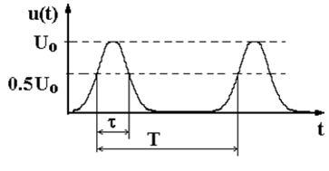

Основные виды сигналов, используемых в радиосвязи военного назначения. Аналоговая модуляция.
Детерминированные сигналы
Для реализации того или иного принципа действия радиотехнической системы и получения при этом связной, навигационной информации, информации о подвижных и неподвижных объектах методами радиолокации и т.д. применяются детерминированные сигналы. Детерминированные сигналы могут быть непрерывными и импульсными.
Детерминированным называется сигнал, закон изменения которого описывается совершенно определенной функцией времени. Каждому моменту времени -∞‹t‹∞ детерминированного сигнала соответствует совершенно определенное, известное значение тока i(t) и напряжения u(t).
Непрерывные сигналы. Самый простой – это гармонический сигнал:
u(t) =Umsin(Ωct+φ0)
Гармонический ВЧ сигнал и его спектр
Негармонические сигналы согласно теореме Фурье могут быть представлены в виде бесконечного гармонического ряда или интеграла.
Периодические сигналы представляются в виде бесконечного ряда:
U(t)=U0/2+Um1sin(Ω1t+φ1)+Um2sin(2Ω1t+φ2)+…+Umksin(k Ω1t+φk)+…
где k=1,2,3…- номер гармоники.
Периодический негармонический НЧ сигнал и его спектр
Колебания с частотой Ω1 называются основной или первой гармоникой, а с частотами Ωk=kΩ1 называются высшими гармониками.
Зависимость амплитуд гармонических составляющих Umk от частоты Ωk представляет собой амплитудный спектр сигнала.
Зависимость фаз гармоник φk от Ωk называется фазовым спектром.
Спектры непериодических сигналов определяются интегралом Фурье
Пример непериодического сигнала и его спектр
В авиационных радиотехнических системах, кроме гармонических и негармонических непрерывных сигналов, используются также импульсные сигналы. Импульсным считается такой сигнал, который представляет собой кратковременные, сравнимые по длительности с временем переходных процессов в цепях, всплески напряжения или тока. Самый простой, идеализированный, импульсный сигнал - это прямоугольный импульс. Низкочастотный
прямоугольный импульс (видеоимпульс) представляет собой физическую реализацию функции
Последовательность прямоугольных импульсов
Кроме прямоугольных импульсов применяются идеализированные треугольные (пилообразные) и трапециидальные импульсы.
Последовательность треугольных и пилообразных видеоимпульсов
Последовательность трапециидальных импульсов
В каскадах радиотехнических систем импульсные сигналы подвергаются линейным и нелинейным искажениям. Благодаря этому фронт импульса удлиняется, а вершина приобретает спад ∆.
Искажения прямоугольного видеоимпульса
Длительность непрямоугольных импульсов определяется, как правило, на уровне 0,5Uo. Иные случаи для конкретных устройств оговариваются в технических требованиях.
Короткие видеоимпульсы удобно аппроксимировать импульсами колокольной формы.

Общий вид графического представления амплитудного спектра видеоимпульсов показан на рисунке. Этот спектр линейчатый и бесконечный. В общем случае частотное расстояние между двумя соседними гармониками обратно пропорционально периоду следования импульсов. Огибающая гармоник Ф(Ω) имеет вид [(sinx)/x], где аргумент х однозначно определен длительностью и формой видеоимпульса
Импульсный высокочастотный сигнал (радиоимпульс) представляет собой ограниченные по времени высокочастотные колебания (пачку колебаний). Длительность существования пачки соизмерима с длительностью переходных процессов в устройстве,
предназначенном для обработки радиоимпульсов. Форма радиоимпульсов определяется огибающей колебаний. Идеальными являются прямоугольные радиоимпульсы. Реальные радиоимпульсы имеют фронты конечной длительности и могут быть представлены в виде колокольных импульсов.
Последовательность прямоугольных радиоипульсов

Форма реальных коротких радиоимпульсов
Длительность радиоимпульсов также определяется, как правило, на уровне 0,5 от максимального размаха
Амплитудный спектр последовательности радиоимпульсов также линейчатый, и бесконечный. Но в отличие от спектра видеоимпульсов он двухсторонний. Центральная частота спектра равна несущей частоте fo . Реальные радиосигналы всегда ограничены во времени. Поэтому и их спектры отличаются от спектров идеализированных сигналов. Но для достаточно длинных сообщений удобно представление сигнала бесконечным во времени. Это позволяет упростить анализ при описании сигналов близком к адекватному.
Амплитудный спектр последовательности радиоимпульсов
Для переноса сообщения применяется модуляция высокочастотных колебаний низкочастотным сигналом. Самый простой способ модуляции – амплитудная, частотная или фазовая манипуляция. При манипуляции соответствующий параметр высокочастотных колебаний в моменты времени tм и tп изменяется скачком. При каждом воздействии манипулирующего сигнала передатчик начинает вырабатывать колебания с другим, соответствующим манипулирующему воздействию, параметром. Манипуляция применяется в системах и комплексах радиосвязи при амплитудной, частотной или фазовой телеграфии.
АМн
ЧМн
ФМн
При непрерывном изменении амплитуды, частоты или фазы высокочастотного колебания образуются амплитудно-модулированные (АМ) колебания, или колебания, модулированные по углу (соответственно ЧМ, или ФМ).
Высокочастотный сигнал с амплитудной модуляцией и его спектр.
Спектр реального АМ сигнала
Характерная особенность АМ колебаний – симметричность спектра относительно несущей частоты fо. Кроме несущей в простейшем случае спектр содержит
две боковые частоты, амплитуды которых определяются глубиной модуляции m. При модуляции сложным, например звуковым, сигналом в спектре образуются симметричные боковые полосы – верхняя боковая (ВБП) и нижняя боковая (НБП). Обе полосы содержат одинаковые сообщения. Так что сигнал АМ обладает избыточностью. Без потери информации можно передавать только одну полосу - ВБП или НБП. Сигнал, сформированный таким образом, что содержит одну боковую полосу, называется сигналом с однополосной модуляцией (ОМ). ОМ сигнал может быть с несущей, с частично подавленной несущей или полностью подавленной несущей.
Высокочастотный сигнал с однотональной, при малом индексе угловой модуляцией и его спектр.
При использовании импульсных сигналов может применяться внутриимпульсная модуляция, модуляция последовательности импульсов, или комбинированные –способы модуляции.
Внутриимпульсная амплитудная модуляция
Радиоимпульсы с внутриимпульсной угловой модуляцией
Последовательность радиоимпульсов с амплитудной модуляцией